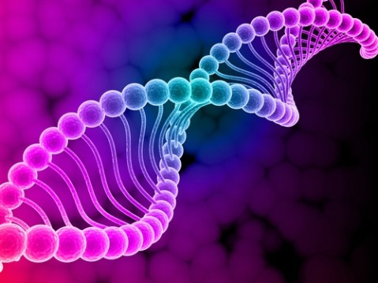

Works
Baseball Sabermatrics Project
A Baseball Statistical Analysis Rankings Database
A free alternative to Baseball Statistical Sabermetrics analytics and rankings services from paid services such as fan graphs.
Tools: PHP, mySQL, HTML, Javascript
Tools: PHP, mySQL, HTML, Javascript

Graham Valuation Database
A Financial Analysis Querying Interface
A querying web application that displays major financial statistics of stock. Utilizes Benjamin Graham's Intrinsic Valuation equation and creates clean rankings interface.
This project utlizes HTML, Javascript, numeric.js, jquery.js.
This project utlizes HTML, Javascript, numeric.js, jquery.js.
Systems Biology Project
A Bio-Mathmatics Simulator
During the summer, I was involved in an software developer internship related to Systems Biology. I worked on creating a Javascript library used to simulate a chemical reaction encoded in the Systems Biology Markup Language (SBML). The library engineers a system of first-order ordinary differential equations and utilizes the Dormand-Price Method to evaluate the ODE.
Tools:YQL, HTML, Javascript, charts.js, jquery.js

Tools:YQL, HTML, Javascript, charts.js, jquery.js